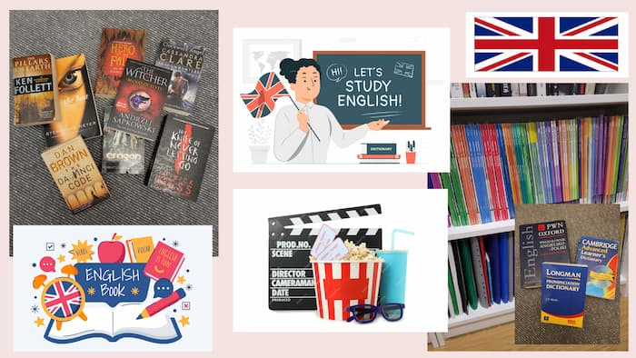

English
With English is like never ending story for me! Since my childhood, I attended additional lessons, travelled to England just after high school for almost a year (as an au pair), completed my Bachelor's and Master's degrees in that field, and I was an English teacher for more than 14 years. I hope that, in my next job, English will also play a crucial role.
This language is my passion not only in a professional way but also privately. I love surrounding myself with it, so I often watch films on Netflix or in the cinema in English or at least with subtitles. I love reading books in English or various content on the internet. I use every opportunity to communicate in English, and every time it feels great!
